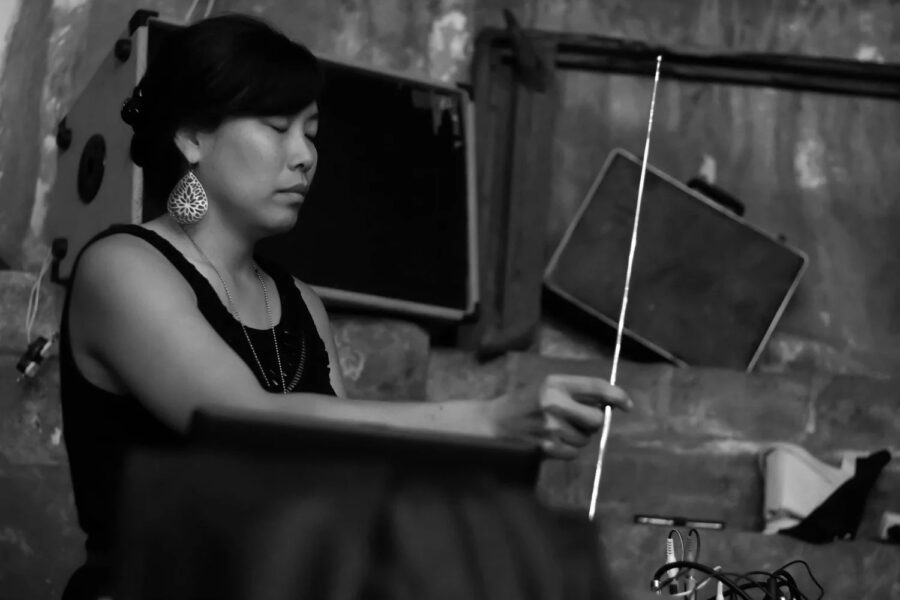

Elastro: Westerlund/Hagen, Bonnie Han Jones, Clinkman/Greene
Our February Elastro team welcomes a traveling trumpet/percussion duo and two sets from Chicago mainstays.
A duo ensemble born from a childhood friendship in the midwest, Joe Westerlund and Trever Hagen have merged their solo work on drums and trumpet into a distinct sound world of melodic, rhythmic and lush electroacoustic texture. The pair pays respect to this instrumentation’s historical context, while reaching further into sonic geographies with their shared voice. Their forthcoming debut release on Totally Gross National Product consists of four compositions born and molded from sprawling improvisations during a winter tour in late 2024.
Bonnie Han Jones is an Korean American improvising musician, poet, and educator working primarily with electronic sound and text. Her work is iterative, multidisciplinary, and typically involves building concepts through research and study and then moving these ideas through a variety of different mediums, methods, and forms. Born in South Korea, Bonnie Han Jones was raised on a dairy farm in New Jersey, spent her formative years in Baltimore, Maryland and currently resides in Chicago, IL. https://bonnie-jones.com/
Brothers in cryptic guitar practices, Andrew Clinkman and Will Greene share a common lineage on the fretted chordophone yielding a nigh telepathic chemistry between the two. Together they weave a sound fabric that is melodic and textural. $15 / $10 w/ Student ID – Tickets Available at the Door